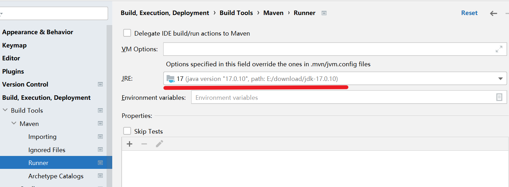
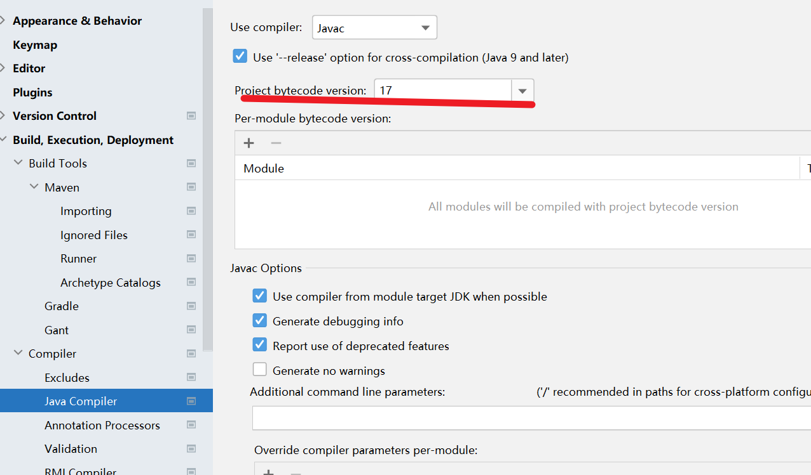
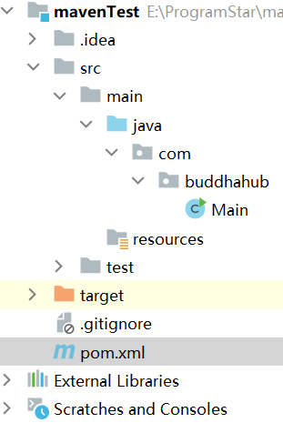
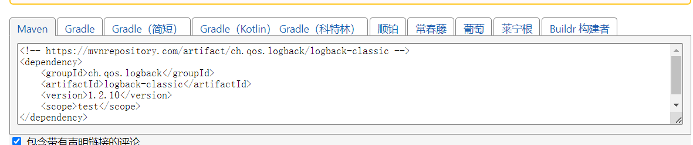
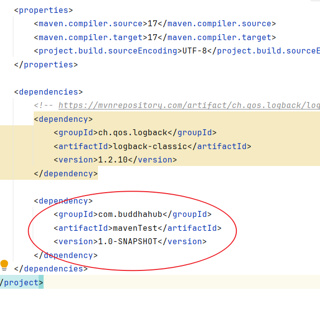

原创：IDEA中的Maven使用方法
一、IDEA中配置Maven配置（全局环境）
- 打开idea，选择全局设置。
 1. 修改成maven本地存放路径，建议本地依赖存放到maven本地文件夹里的新建文件夹mvn_repo中。
1. 修改成maven本地存放路径，建议本地依赖存放到maven本地文件夹里的新建文件夹mvn_repo中。
 3. 打开runner目录，建议选择java开发版本17(springboot3支持的java最低版本)。
3. 打开runner目录，建议选择java开发版本17(springboot3支持的java最低版本)。

4. 项目字节码版本要与第三步中JRE版本一致。

-
注意：
这样创建常规maven，Maven Archetype是要使用模板的，注意区别。

# 二、Maven坐标
定义
- maven资源的唯一标识，通过该坐标可以唯一定位资源位置。
组成
groupId - maven项目隶属组织名称
artifactId - maven项目名称
version
- maven项目版本号
-
注意：
在maven项目文件中的pom.xml文件中可以设置或者查看maven坐标。

三、导入maven工程
-
方法一： 打开IDEA，选择右侧maven面板，点击 + 号，双击目标项目的pom.xml文件即可。
-
方法二： 打开IDEA，选择file，选择project structure，点击 + 号，选择Import Module，双击目标项目的pom.xml文件即可。
-
注意：
想要彻底删除某个maven项目的话，直接在IDEA中delete是不能彻底删除的，还要在磁盘目录中删除项目文件
四、maven依赖配置与管理
导入依赖
-
- 打开maven项目的pom.xml文件。
-
- 在project标签中填写dependencies标签，然后在dependencies标签下添加dependency标签，dependency标签有三个子标签groupId，artifactId和version，artifactId中填写需要添加的依赖资源,点击IDEA自动补全的groupId和version标签。
-
- 点击maven中的load maven change，下载依赖到本地。

-
注意：
如果导入依赖的第二步中无法自动补全，则表示本地依赖中没有使用过该依赖。可以通过maven依赖仓库把依赖信息复制粘贴进三个子标签中。网站中可以选择想要依赖的版本号，复制依赖的坐标信息即可。(需要删除复制代码中的scope标签) 
依赖传递
- 依赖具有传递性,可以通过引入依赖的方式对不同maven项目的依赖进行引用。
- 如果一个依赖本身也有自己的依赖，那么这些依赖就是传递依赖。Maven 会自动解析这些依赖，并将它们添加到项目的类路径中。 
可以发现，如果对不同依赖进行引用，可能会导致引入不必要的依赖，如何解决呢？
排除依赖
- 可以使用如下格式的坐标信息来删除指定的依赖。
<dependencies>
<!-- 其他依赖 -->
<dependency>
<groupId>需要排除依赖的groupId</groupId>
<artifactId>需要排除依赖的artifactId</artifactId>
<version>依赖的版本</version>
<exclusions>
<exclusion>
<!-- 排除特定的依赖 -->
<groupId>要排除的groupId</groupId>
<artifactId>要排除的artifactId</artifactId>
</exclusion>
</exclusions>
</dependency>
<!-- 其他依赖 -->
</dependencies>
依赖范围
- 依赖的jar包默认在任何地方使用。可以通过scope标签设置作用范围。
| scope | 主程序 | 测试程序 | 打包（运行） | 范例 |
|---|---|---|---|---|
| compile（默认） | Y | Y | Y | log4j |
| test | - | Y | - | junit |
| provided | Y | Y | - | servlet-api |
| runtime | - | Y | Y | jdbc驱动 |
如果scope是默认值，可以不添加scope标签。
五、maven生命周期
-
作用
- maven生命周期是对所的maven项目构建过程进行抽象和统一。
-
组成部分 (maven中有三套相互独立的生命周期)
- --> clean: 清理工作。
- --> default: 核心工作：编译，打包，安装，部署等。
- --> site: 生成报告、发布站点等。
有五个生命周期阶段是常用且必须掌握的。 1. clean生命周期中的clean阶段。作用：移除上一次构建生成的文件。 2. default生命周期中的compile阶段。作用： 编译项目源代码。 3. default生命周期中的test阶段。 作用： 使用合适的单元测试框架运行测试（junit）。 4. default生命周期中的package阶段。 作用： 将编译后的项目打包，如jar, war。 5. default生命周期中的install阶段。 作用： 安装项目到本地仓库。
-
注意：
每套生命周期内包含一些阶段，阶段是有顺序的，后面的阶段依赖于前面的阶段。同一套生命周期中，后面的阶段执行则前面的阶段会一起执行。
执行指定生命周期的两种方式
-
方法一：IDEA中点击右侧maven，选择对应的生命周期，双击执行。
-
方法二：命令行输入mvn {想要执行的生命周期名称，例如：clean}。